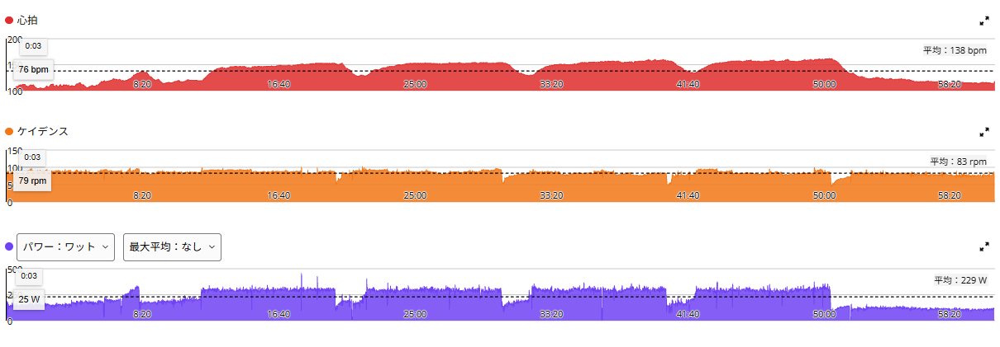
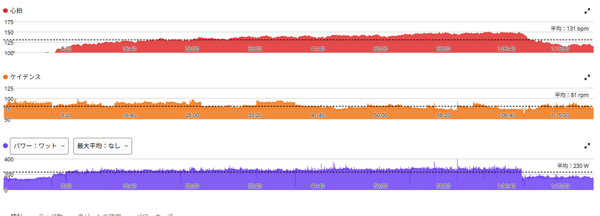
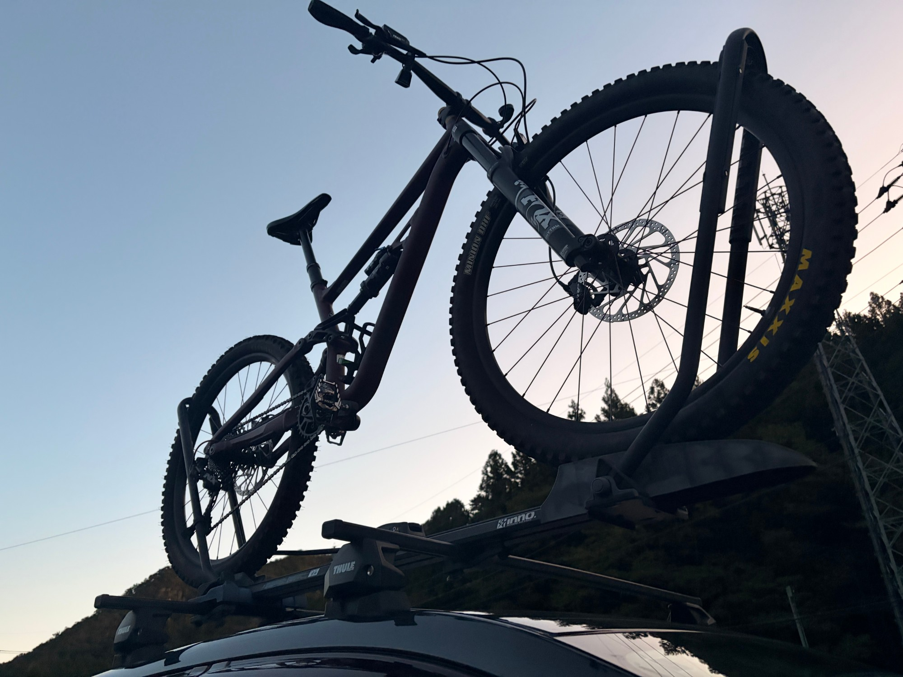

週500TSSは下限なのか。数字に振り回されず、でも練習をぬるくしないために
最近、AIに練習内容を相談すると、ちょっとした疲労の話から「明日は回復走にしましょう」という提案が出てくることがあった。もちろん回復が重要なのは分かっている。ただ、私は富士ヒルゴールドを目指している。目標はそこそこ乗ることではなく、長い登りで高い出力を維持できるようになることだ。ローラーで300Wを60分踏めるようになりたい、という大きな目標もある。
だから、特に強い疲労や痛みがないのに、毎回無難な低強度へ誘導されるのは違うと思った。AIの「疲労をためないことも大切です」に対して、私の答えは「それはそう。でも、伸ばすための負荷まで避けたら本末転倒では？」である。
そこで今回、自分が考える練習の積み上げ方をいったん言語化しておくことにした。これは誰にでも当てはまる練習指南ではなく、私自身の現状と目標を踏まえた暫定的な運用メモだ。

11月7日までで504.9TSS
週間TSSは月曜始まり、日曜締めで数えている。
| 日付 | 内容 | TSS |
|---|---|---|
| 11月2日（月） | ローラーSST20分×3本 | 116.4 |
| 11月3日（火） | 友人と渡良瀬遊水地、回復走 | 25.0 |
| 11月4日（水） | 太平山反時計回り | 155.1 |
| 11月5日（木） | ローラー60分持続走・253W | 89.4 |
| 11月6日（金） | ローラー8分×4本 | 79.0 |
| 11月7日（土） | 友人とMTB、会話しながら登る低強度 | 推定40.0 |
11月7日までの合計は504.9TSS。このうち実測で確認できたのは464.9で、MTBの40.0はパワーデータなしの推定値だ。11月8日（日）の分はまだ走っていないので、この合計には含めていない。
数字だけ見ると500TSS超。しかし中身を見ると、SST・登坂・60分持続走・8分インターバルと、かなり濃い。私としては今週の500台は少なめにも感じるが、高強度の質まで無視してTSSだけを見てはいけない。
週間TSSの目安を置いておく
以前の集計では、10月5日〜11月1日の4週間について、775.5／802.0／559.7／539.9TSS、平均669.3TSSという暫定値が出ていた。ただし、記録に欠けた日や、TSSが分からない活動がある。現在はClaude側でも集計を進めているので、669.3は確定した正解ではなく、今のところの参考値とする。記録なし、未確認、推定を混同しないのが第一だ。
そのうえで、現時点の自分用の目安は次のように置いておく。
- 400〜500予定の都合や疲労調整が入った軽めの週
- 500〜600通常週の下限寄り
- 600〜700当面の標準的な積み上げ週の候補
- 700〜800負荷が高い週。回復具合と内容をしっかり確認
- 800以上過去に経験はあるが、毎週当然のように狙う数字ではない
これは速い人・遅い人の格付けではないし、毎週600を必ず超えるというノルマでもない。TSSは「どれだけ負荷をかけたか」であって、「その分だけ強くなったか」ではない。
「回復を勧めすぎないでほしい」の真意
私が求めているのは無茶な毎日全力走ではない。疲労の根拠を確認したうえで、いける日はしっかり練習したい、ということだ。単に「昨日高強度だったから今日は回復走」と機械的に決めず、実際の脚の感覚、腰や膝の状態、直近の出力、睡眠、生活の予定を見てメニューを提案してほしい。
逆に、鋭い痛みやしびれ、明らかな出力低下、強い疲労が続くようなら話は別。必要なら強度を落とすし、休むことも選ぶ。積み上げと無謀は別物だ。
それぞれのメニューは何のためにやるのか
室内SST（20分×3本）：狙いは、高い有酸素出力を合計60分、繰り返し維持すること。最近は270W台を揃えられるようになり、11月2日は274→280→280Wまで伸びた。しかも以前より体感が軽い日だった。ただし280WはFTP289Wの約97％で、ほぼ閾値走に近い。毎回更新を義務にする必要はない。

室内8分×4本（レスト2分）：狙いは、FTP付近の高強度を短いレストで反復する能力を鍛えること。10月31日は296Wで8分走った後に失敗。11月6日は294→291→293→292Wで4本完遂、平均292.5W、体重72kg換算で約4.06W/kgだ。
しかし余裕はゼロに近かった。3本目の後半からずっとつらく、4本目に入る前にはやめたかった。それでも完遂したのだから、当面は290〜293Wで回数を積み、安定して再現できるようになることを優先する。290Wは目標の下限であって、痛みが出ても死守する数字ではない。
ローラー60分持続走：11月5日は、走り始めたときに280Wを踏みたい感覚ではなかったので、特定の数字を狙わず「60分できそうなペース」で走った結果が253W×60分。昔は250W×20分でもきつかったので、自分でも驚いた。ただし体感は9割ほどで、ラスト5分は本当にきつかった。これを軽いベース走と呼ぶのは違う。長時間の持続能力を見る、一つの重要な基準にしたい。むやみに毎回更新はしない。

屋外の太平山反時計回り：高出力の登坂を連続してこなす能力、ペース配分、最後まで踏み切る力を磨く。11月4日は太平山を約7分・331W、琴平峠を約14分・315W、唐沢山を約5分・343W。終わった後は背骨に沿った腰の中央に、痛みではない張りがあった。「腰で乗れている証拠」と安易に決めつけず、姿勢を支える筋肉の疲労の可能性も含めて観察する。

屋外の唐沢ゴルビー（5分×5本）：屋外での高強度の柱。短い登坂で反復して高出力を出し、後半の失速を抑える。10月29日は321→332→337→335→341W。暑さ寒さや疲労で、最初から突っ込みすぎないようにする。

ベース走・友人とのMTB：ベース走は決して手抜きではない。ローラーで200〜220W程度の持続を積む日も必要だ。ただし、目的なくTSSを抑えるためだけのベース走は増やさない。MTBでは仲間と会話しながら登り、下りを楽しむ日もある。11月7日は約1時間20分、心拍平均113bpm、獲得439m。走行後は少し眠くなったが、寝たらすっきりして重い疲労は残らなかった。心肺には軽くても、下りの操作や振動による筋肉の負担は別にあり得る。

室内と実走のパワーは、無理に比べない
ローラー8分×4本の290W台は、かなりつらい。一方、実走の登坂では300Wを超える時間が続く。室内ではダンシングも車体を左右に振る動きも実走ほど使えず、筋肉の使い分けが難しいことが大きいと私は思っている。業務用扇風機で風を当てているので、ただの冷却不足と決めつけるのも違う。
ただし、外と中では時間の長さも条件も違い、バイクとパワーメーターも異なる。現時点で「ローラーは何W低く表示する」とは言えない。室内の290Wと実走の300W超は、それぞれの環境で追う別々の成長指標とする。
これから見ていくこと
- 週ごとのTSSを月曜〜日曜で揃え、実測・推定・未確認を区別する。
- Claudeの集計結果が出たら、直近4週と1か月の平均を改めて確認する。
- SST20分×3本の出力と、終えた後の疲労感の変化を見る。
- 8分×4本は290W以上を基本に、3本目後半からの苦しさが軽くなるかを見る。
- 60分走は253Wを現時点の基準として記録する。
- 実走の登坂記録と、腰・膝を含む身体の反応をセットで残す。
- 週600〜700TSSを暫定的な目安としつつ、高強度の質や生活の予定とのバランスで調整する。
TSSは便利だが、便利すぎる
TSSという数字は便利だが、便利すぎる。下がれば不安になるし、上がれば何となく安心してしまう。でも、目指しているのは週間TSSのランキングではない。富士ヒルで速く走ること、そしてローラーで300Wを60分維持できるようになることだ。
攻める日は攻める。積む日は積む。必要なら休む。ただし、数字だけを追って中身を空っぽにはしない。この方針が本当に正しいかどうかは、これからの数週間の記録が教えてくれるはずだ。